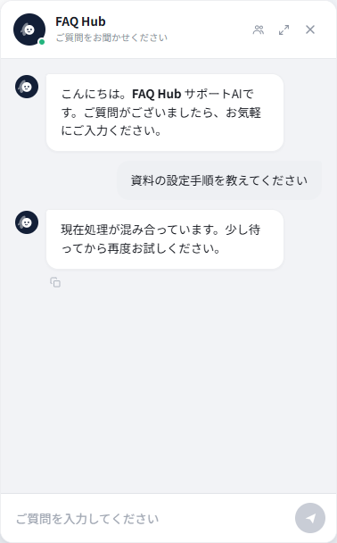
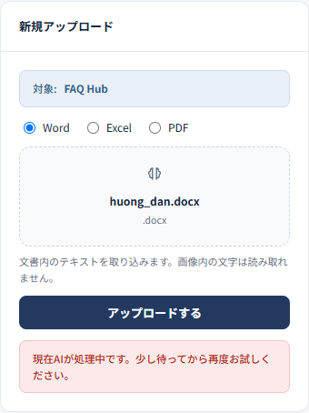
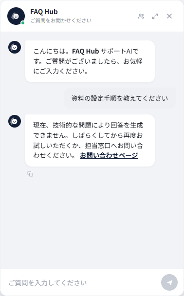
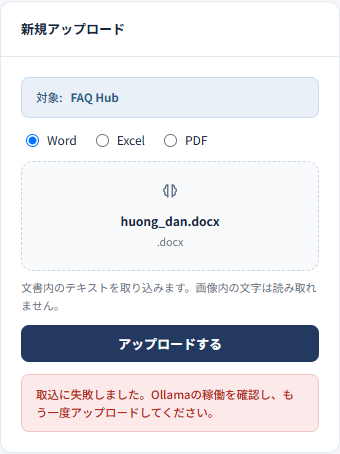
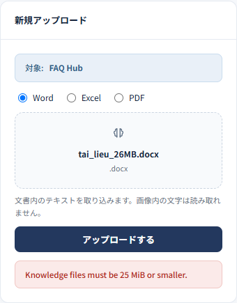
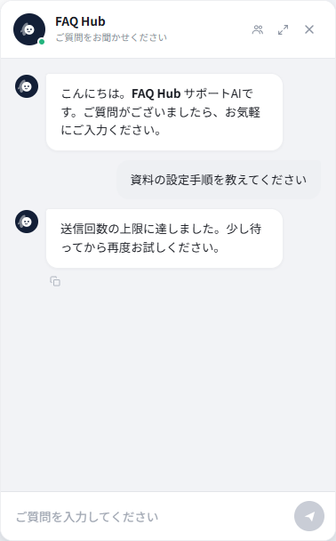

以下は既定の設定値です。画像は、Web画面にAPIの応答を模擬して表示した例です。
9.1 AIが処理中のとき
既定では、1つのBackendが同時にOllamaへ依頼する処理は1件です（AI_MAX_CONCURRENCY=1）。検索用ベクトルの作成、FAQの選択、回答の作成で、この上限を共有します。利用者を1人に制限する設定ではありません。
同時に依頼する件数は1〜32に設定できます。ただし、設定した件数と同じ人数が同時に利用できるという保証ではありません。FAQに直接一致する質問は、AIを呼び出さずに回答できます。


上限を超えた要求には、HTTP 503 / SERVER_BUSYを返します。サーバーは5秒後の再試行を案内しますが、その時点でも処理中の場合があります。自動で順番待ちや再送信は行いません。
9.2 待ち時間の上限
| 処理 | 既定値 | 適用範囲 |
|---|---|---|
| 検索用ベクトルの作成 | 60秒 | 質問または文章区切り1つを処理するたびに適用。 |
| AIによるFAQ選択・回答作成 | 120秒 | AIを呼び出すたびに適用。モデルの読込時間も含む。 |
| PostgreSQL接続の取得 | 10秒 | DB接続を取得するたびに適用。 |
ファイル全体や会話全体ではなく、1回の処理に対する上限です。文章区切りが多いファイルは、全体で60秒を超える場合があります。最初の質問では、Ollamaがモデルを読み込むため時間がかかる場合があります。
この値は待ち時間の上限であり、回答時間を保証するものではありません。時間切れやAIのエラーで処理できなかった場合は、次のように表示します。


設定を変更する場合のみ、Backendの.envを編集します。
AI_EMBEDDING_TIMEOUT_MS=60000AI_RESPONSE_TIMEOUT_MS=120000DB_CONNECTION_TIMEOUT_MS=10000
単位はミリ秒です（1秒＝1,000ミリ秒）。変更後はBackendを再起動します。設定値が有効な範囲外の場合は、既定値を使用します。
9.3 ファイル容量と操作回数の上限
容量・文字数・使用できるデータ
| 対象 | 既定値 | 利用時の動作・条件 |
|---|---|---|
| AI用資料 | 1回1ファイル、25 MB／ファイル | 容量を超えるとアップロードを受け付けません。小さいファイルを選択します。 |
| FAQ画像 | 1FAQにつき5枚、5 MB／枚 | JPEG・PNG・WebPのみ。容量または枚数の上限を超える画像は受け付けません。 |
| 質問文 | 最大4,000文字 | 未入力の質問は受け付けません。入力欄で文字数を制限します。 |
| AIに渡す資料本文 | 24区切り、16,000文字 | 最初に8区切りを検索し、関連する文章を追加します。この上限は資料本文に適用し、AIへ送る全データの合計ではありません。 |
| 回答に使用するデータ | 対象サイトの承認済みデータ | FAQは公開中、資料は取込完了であることが必要です。却下されたファイルのFAQは回答に使用しません。 |
操作回数
| 操作 | 既定の上限 | 数え方 |
|---|---|---|
| 質問の送信 | 60回／分 | 同じIP・サイト・作成済みの会話の組合せ。 |
| 同じIPからの質問 | 1,200回／分 | 同じIPから送信した質問の合計。 |
| チャットAPIの呼出し | 6,000回／分 | 同じIPからのチャットAPIの要求合計。質問、質問候補、会話履歴の取得を含む。 |
| ログイン | 20回／15分 | 同じIP。成功・失敗の両方を数える。 |
| AI資料のアップロード | 60回／15分 | ログイン中のアカウントごとに要求の送信回数を数える。 |
IPはサーバーから見たネットワークのアドレスです。同じネットワークを使う複数人が、IP単位の上限を共有する場合があります。回数の上限を超えるとHTTP 429を返します。サーバーが案内する時間を待ってから再試行します。
ファイルの容量を超えた場合

質問を送りすぎた場合

AIの同時実行数と要求の送信回数は、Backendごとに数えます。現在、同時利用人数や復旧時間についての性能保証値はありません。